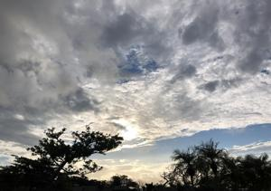
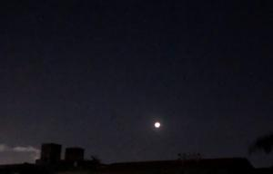
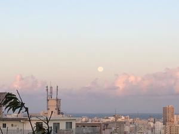

うるがいの話 ある日
最新: インクスケープうるがいとは 前提知識です
カニの画像をクリックすると『うるがいの話』サイトを表示します|
|
【うるがいの話】 うるがい(ｳﾙｶﾞｲ urugai)とは、『もずくがに』の名前でとても大きくなります。 |
|---|---|
|
|
【Got cat カミマヤーの話】 たながー（ﾀﾅｶﾞｰtanagaa）とは手長えびのことで、何種類かあり大きいのは車 エビぐらいになります。 |

|
【ぶながぁの話】 ぶながー(bunagaa)とは、赤い髪の毛、赤い身体、そして身長は１ｍ２０ｃｍ ぐらい、川の蟹を食べているの目撃された。場所は沖縄県国頭郡大宜味村のと ある村僕の隣近所に住んでいる爺さんから、聞いた話です。 |
|
|
【ギーマの話】 ギーマ(giima)とは、山原の里山に咲くスズランに似た、 花を付けます。実は食べられます、 気が付くと口の周りが紫になっています。 |
2021年11月20日 (土）インクスケープ
15:49
  
Inkscape(インクスケープ)とは、無料で使えるドロー系のグラフィックアプリ
ケーションです。ドロー系とは、数値計算によってモニターへ図形を描画して
いきます。
朝からユーチューブの動画を見ながら学習をする、毎度ソフトのバージョン等
の違いで動画のとおりには動かない。疲れる・・・、ところでこれをスタディ
して何かするのだろうか、今一曖昧だがまぁその筋の人なので。昨日の皆既月
食は、くっきり晴れた空に綺麗に見えた。夕方まで見えないと思っていたので
諦めていたが。近頃、日が暮れるのが早いので、日常の動を冬モードに変更す
る。夕方走る前にギター等を弾いていたが、今は走った後に変えた。図書館か
ら借りている本の中で好きな曲の一つ『さとうきび畑』があったので楽譜ソフ
トで曲を登録、テンポは遅く設定して三線を弾いている。『さとうきび畑』は
私が小学校の頃、ＮＨＫの『皆の歌』という番組で、ちあきなおみが歌ってい
た、悲しい曲だなと感じた覚えたある。図書館の本には、ギターのコードがな
く調べてコードのパーツを追加した。だが、結構大変だったので途中で止めた
だから、未完成である、ま、いつかは完成させるかも。
『さとうきび畑』 ４分４１秒
作品 第Ｐ６８番（ユチューブ）